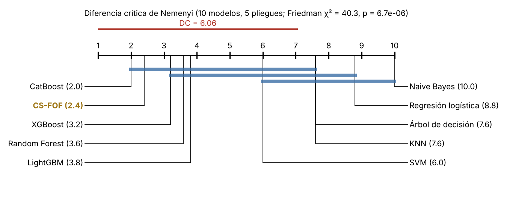

Validación estadística del modelo original#
Protocolo#
Todos los modelos se evalúan con la misma validación cruzada anidada estratificada (5 pliegues externos ×
5 internos, semilla 42), el mismo preprocesamiento y el mismo presupuesto de búsqueda
(experiments/protocolo.md). La métrica principal es el F1 de la clase default. Las desviaciones
estándar usan ddof=1. Se comparan los 7 modelos base, dos métodos recientes del estado del arte
(LightGBM y CatBoost) y CS-FOF. Las cifras se reproducen con experiments/comparacion_final/pruebas.py
y experiments/comparacion_final/delong.py.
Resultados#
Modelo |
Técnica |
Búsqueda |
F1 (media ± d.e.) |
AUC-ROC |
|---|---|---|---|---|
CatBoost |
class_weight |
aleatoria |
0.5480 ± 0.0088 |
0.7838 |
CS-FOF |
class_weight |
aleatoria |
0.5479 ± 0.0054 |
0.7847 |
XGBoost |
class_weight |
Optuna |
0.5466 ± 0.0091 |
0.7828 |
LightGBM |
class_weight |
Optuna |
0.5462 ± 0.0086 |
0.7843 |
Random Forest |
class_weight |
aleatoria |
0.5452 ± 0.0077 |
0.7831 |
SVM |
SMOTE |
aleatoria |
0.5387 ± 0.0048 |
0.7638 |
KNN |
class_weight |
aleatoria |
0.5264 ± 0.0122 |
0.7629 |
Árbol de decisión |
class_weight |
Optuna |
0.5254 ± 0.0043 |
0.7569 |
Regresión logística |
class_weight |
genético |
0.5182 ± 0.0104 |
0.7449 |
Naive Bayes |
SMOTE |
malla |
0.4987 ± 0.0078 |
0.7454 |
CS-FOF queda prácticamente empatado con CatBoost en F1 (diferencia de 0.0001), con el mayor AUC-ROC y la menor variabilidad entre los cinco mejores modelos. Sus cuatro métodos de búsqueda dan resultados cercanos: aleatoria 0.5479, genético 0.5476, malla 0.5468 y Optuna 0.5456.
Pruebas de hipótesis#
Friedman y Nemenyi. Sobre la mejor combinación de los 10 modelos, la prueba de Friedman rechaza la igualdad de desempeño (\(\chi^2=40.29\), \(p=6.7\times10^{-6}\)). Los mejores rangos medios son CatBoost (2.0), CS-FOF (2.4), XGBoost (3.2), Random Forest (3.6) y LightGBM (3.8). Con 5 pliegues y 10 modelos la diferencia crítica de Nemenyi es 6.06, así que la prueba solo separa a los mejores de los modelos clásicos más débiles.


Fig. 3 Diagrama de diferencia crítica de Nemenyi con CS-FOF incluido. Cada modelo se ubica en su rango medio (1 es el mejor) sobre los 5 pliegues externos; las barras azules unen modelos cuya diferencia de rangos es menor que la diferencia crítica (6.06) y que, por tanto, no se distinguen. CS-FOF (2.4) queda en el mismo grupo que CatBoost (2.0), XGBoost, Random Forest y LightGBM.#
Rival |
Diferencia de F1 |
Gana en |
p Nadeau–Bengio (Holm) |
p Wilcoxon (Holm) |
δ de Cliff |
|---|---|---|---|---|---|
CatBoost |
−0.0001 |
2 de 5 |
1.000 |
1.000 |
−0.04 |
XGBoost |
+0.0014 |
4 de 5 |
1.000 |
1.000 |
0.36 |
LightGBM |
+0.0018 |
3 de 5 |
1.000 |
1.000 |
0.12 |
Random Forest |
+0.0027 |
4 de 5 |
1.000 |
0.750 |
0.36 |
SVM |
+0.0092 |
5 de 5 |
0.014 |
0.563 |
0.76 |
KNN |
+0.0216 |
5 de 5 |
0.056 |
0.563 |
0.92 |
Árbol de decisión |
+0.0225 |
5 de 5 |
0.003 |
0.563 |
1.00 |
Regresión logística |
+0.0297 |
5 de 5 |
0.014 |
0.563 |
1.00 |
Naive Bayes |
+0.0493 |
5 de 5 |
< 0.001 |
0.563 |
1.00 |
Con 5 pliegues, la prueba de Wilcoxon bilateral no puede bajar de \(p=0.0625\), por lo que nunca rechaza.
DeLong y McNemar. Se reajustaron los modelos con los hiperparámetros elegidos en cada pliegue para obtener predicciones fuera de pliegue de los 29 965 clientes.
Rival |
AUC CS-FOF / rival |
p DeLong |
Solo falla CS-FOF / solo falla el rival |
p McNemar |
|---|---|---|---|---|
CatBoost |
0.7833 / 0.7843 |
0.273 |
429 / 936 |
< 0.001 |
XGBoost |
0.7833 / 0.7827 |
0.561 |
434 / 827 |
< 0.001 |
LightGBM |
0.7833 / 0.7725 |
< 0.001 (ver nota) |
345 / 782 |
< 0.001 |
Random Forest |
0.7833 / 0.7822 |
0.171 |
313 / 615 |
< 0.001 |
Note
El AUC de LightGBM reajustado (0.7725) queda por debajo del de su validación anidada (0.7843). La diferencia viene del reajuste, no del modelo, así que el resultado de DeLong contra LightGBM no se usa como evidencia de superioridad.
McNemar es significativa contra todos porque CS-FOF comete menos errores exclusivos, pero esto refleja sobre todo que sus probabilidades están mejor calibradas alrededor del umbral 0.5 (capítulo de evaluación ampliada), no un mejor ordenamiento de los clientes.
Intervalos de confianza bootstrap de la diferencia de F1. Las secciones 6.5 y 6.7 de la guía piden un
intervalo para la diferencia de desempeño. Se construyó con las mismas predicciones fuera de pliegue de los
29 965 clientes y umbral 0.5 (experiments/comparacion_final/bootstrap_f1.py):
Remuestreo pareado: se toman clientes con reemplazo, estratificando por clase, y en cada réplica se calcula F1(CS-FOF) − F1(rival) sobre los mismos clientes. Son 10 000 réplicas con semilla 42.
Intervalos: se reportan el percentil y el BCa. La aceleración del BCa sale de un jackknife exacto: como el F1 depende solo de los conteos de la matriz de confusión, basta agrupar a los clientes en sus 16 tipos de aciertos y errores.
Valor p: se calcula a partir de las réplicas y se corrige con Holm sobre los 4 rivales.
Rival |
Diferencia |
IC 95 % percentil |
IC 95 % BCa |
Réplicas en que gana CS-FOF |
p bootstrap |
p Holm |
|---|---|---|---|---|---|---|
CatBoost |
+0.0013 |
[−0.0029, +0.0056] |
[−0.0030, +0.0055] |
73 % |
0.532 |
0.532 |
XGBoost |
+0.0035 |
[−0.0006, +0.0077] |
[−0.0006, +0.0076] |
96 % |
0.087 |
0.262 |
LightGBM |
+0.0025 |
[−0.0013, +0.0064] |
[−0.0014, +0.0063] |
91 % |
0.188 |
0.377 |
Random Forest |
+0.0050 |
[+0.0015, +0.0085] |
[+0.0015, +0.0085] |
99.7 % |
0.005 |
0.022 |
Lectura de los intervalos:
CatBoost, XGBoost y LightGBM: el intervalo contiene el cero. Frente a CatBoost, que es el mejor benchmark, el rango de diferencias compatibles va de −0.003 a +0.006.
Random Forest: la diferencia sí es significativa tras Holm, pero son 0.5 puntos de F1. Es una ventaja pequeña en la práctica. Además no es una ventaja en todo: CS-FOF detecta 102 incumplidores menos que Random Forest (3,893 frente a 3,995), pero da 404 falsas alarmas menos (3,675 frente a 4,079). El F1 mejora porque el segundo efecto pesa más.
Alcance: este bootstrap es condicional a los modelos ya entrenados. Mide cuánto cambia la diferencia si los clientes fueran otros, pero no la variación por volver a entrenar. Esa variación la recoge la t corregida de Nadeau–Bengio, que frente a Random Forest no es significativa (p Holm = 1.000).
Las dos pruebas responden preguntas distintas: «con estos modelos, ¿CS-FOF clasifica mejor a esta población?» frente a «¿el método CS-FOF, reentrenado, supera al método Random Forest?». La segunda es la que pide la condición R3.
LightGBM: como se indicó arriba, su reajuste fuera de pliegue rinde menos que su validación anidada, así que su intervalo favorece a CS-FOF.
Umbral elegido dentro del entrenamiento (exploratorio). Todas las comparaciones anteriores usan el umbral
0.5. Para comprobar que el resultado no depende de esa elección, cada uno de los cinco mejores modelos recibió su
propio umbral, con el mismo protocolo (experiments/comparacion_final/umbral_interno.py):
Predicciones internas. En cada pliegue externo se usa solo su entrenamiento. Con los hiperparámetros elegidos ahí se generan predicciones internas fuera de pliegue (5 pliegues).
Elección del umbral. Con esas predicciones internas se elige el umbral que maximiza el F1.
Aplicación. El umbral queda congelado y se aplica a la prueba externa, que no intervino en ninguna elección.
Es exploratorio porque se decidió después de ver los resultados.
Modelo |
Umbral elegido (rango) |
F1 con 0.5 |
F1 con umbral ajustado |
Cambio |
|---|---|---|---|---|
CS-FOF |
0.51 (0.50 a 0.53) |
0.5483 |
0.5481 |
−0.0003 |
CatBoost |
0.55 (0.53 a 0.57) |
0.5471 |
0.5497 |
+0.0026 |
XGBoost |
0.53 (0.51 a 0.56) |
0.5448 |
0.5474 |
+0.0026 |
LightGBM |
0.54 (0.52 a 0.57) |
0.5459 |
0.5479 |
+0.0020 |
Random Forest |
0.53 (0.52 a 0.54) |
0.5434 |
0.5452 |
+0.0019 |
Qué cambia al ajustar el umbral:
Los métodos de boosting y Random Forest ganan entre 0.002 y 0.003 de F1; CS-FOF no gana nada. Su umbral óptimo ya estaba en 0.51, porque sus probabilidades están mejor centradas, como se vio en la calibración.
Con umbrales ajustados, CatBoost queda por delante de CS-FOF por 0.0016. No es significativo:
Nadeau–Bengio da p = 0.60 y Wilcoxon p = 0.63, ambos sin corregir.
El bootstrap pareado del F1 global da un IC 95 % de [−0.0055, +0.0022].
La diferencia frente a Random Forest que el bootstrap mostraba con 0.5 deja de ser significativa: queda en +0.0028, con IC 95 % de [−0.0005, +0.0061].
Lectura: parte de la pequeña ventaja de CS-FOF con el umbral 0.5 venía de que sus probabilidades quedan mejor centradas en ese corte, no de que separe mejor a los clientes. Cuando cada modelo usa su propio umbral, los cinco quedan empatados.
Qué mide cada prueba. Las pruebas de este capítulo no responden la misma pregunta, y por eso no se cuentan como tres demostraciones de una mejora en F1:
Prueba |
Métrica que compara |
Fuente de variación que considera |
Frente a CatBoost |
|---|---|---|---|
Friedman con Nemenyi |
Rango del F1 entre los 10 modelos |
Pliegues externos |
Mismo grupo (diferencia de rangos 0.4 < 6.06) |
t corregida de Nadeau–Bengio (Holm) |
F1 por pliegue |
Pliegues, con corrección por solapamiento del entrenamiento |
No significativa (p = 1.000) |
Wilcoxon de rangos con signo (Holm) |
F1 por pliegue |
Pliegues |
No significativa (con 5 pliegues, p ≥ 0.0625) |
Bootstrap pareado (BCa) |
F1 fuera de pliegue |
Clientes, con los modelos fijos |
No significativa (IC 95 % [−0.003, +0.006]) |
DeLong |
AUC-ROC, no F1 |
Clientes, con los modelos fijos |
No significativa (p = 0.273) |
McNemar |
Errores a umbral 0.5, no F1 |
Clientes, con los modelos fijos |
Significativa: CS-FOF tiene menos errores exclusivos, sobre todo por su calibración alrededor de 0.5 |
De las cuatro pruebas sobre el F1, ninguna muestra superioridad frente a CatBoost. DeLong y McNemar se reportan como información complementaria: no evalúan la métrica principal.
Veredicto de superioridad#
Según la definición operativa del Entregable 3 (sección 6.4), CS-FOF no es superior de forma estadísticamente significativa al mejor modelo de referencia (CatBoost): frente a CatBoost, XGBoost, LightGBM y Random Forest, Nadeau–Bengio y Wilcoxon no son significativas, el intervalo bootstrap de la diferencia de F1 frente a CatBoost contiene el cero ([−0.003, +0.006]) y el tamaño del efecto es despreciable o pequeño. El único intervalo que excluye el cero es frente a Random Forest (+0.005 de F1), pero está condicionado a los modelos ya entrenados y la prueba que considera el reentrenamiento (Nadeau–Bengio) no lo confirma. Con el umbral elegido dentro del entrenamiento de cada modelo, esa diferencia también desaparece y CatBoost queda ligeramente por delante (0.5497 frente a 0.5481), sin significancia. En los tres conjuntos de datos adicionales tampoco es consistente (capítulo de evaluación ampliada). Sí es significativamente mejor que SVM, árbol de decisión, regresión logística y Naive Bayes con tamaños de efecto grandes, y empata con el mejor método del estado del arte en el problema principal con la menor variabilidad entre pliegues.